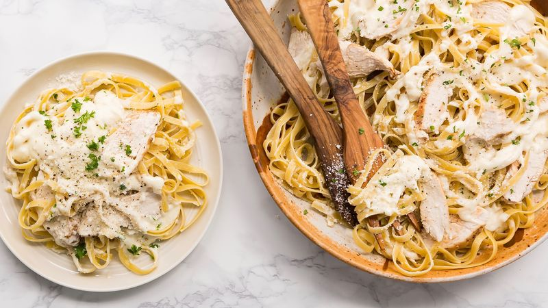

Chicken Alfredo

Description
Chicken Alfredo is an Italian dish that consists of a creamy white
sauce(pan sauce made from butter and Parmigiano cheese), strands of pasta,
sliced tender pieces of chicken, seasoning, and vegetables of your choice.
Ingredients
- 4 (4 ounce) skinless, boneless chicken breast halves
- 1/4 cup water
- 1 (.7 ounce) package dry Italian-style salad dressing mix
- 1 clove garlic, pressed
- 1 (8 ounce) package cream cheese, softened
- 1 (10.5 ounce) can condensed cream of chicken soup
- 1 (4.5 ounce) can chopped canned mushrooms
- 1 (8 ounce) package spaghetti
- 1 tablespoon chopped fresh parsley
Directions
-
Spray the crock of a slow cooker with nonstick cooking spray.
Place chicken breasts in the crock. Combine water and Italian
dressing mix in a small bowl. Pour over chicken; sprinkle with
garlic, cover, and cook on Low for 4 hours.
-
After 4 hours, whisk cream cheese and condensed soup together
in a bowl. Pour over chicken. Stir in mushrooms. Cover and cook on Low for 1 hour.
-
Fill a large pot with lightly salted water and bring to a rolling
boil over high heat. Stir in spaghetti, and return to a boil. Cook pasta
uncovered, stirring occasionally, until cooked through but still firm
to the bite, about 12 minutes. Drain well.
-
To serve, spoon chicken and sauce over hot cooked pasta and sprinkle with parsley.
Home